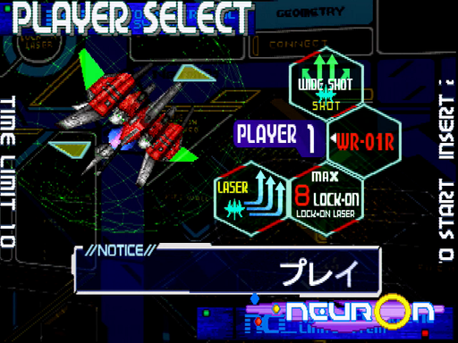
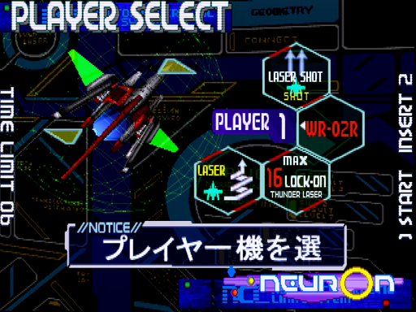
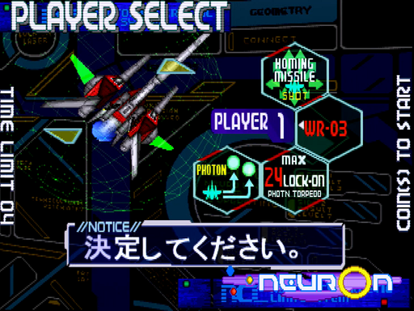

自機性能
基本的なこと
自機は、8方向レバーとA・B・Cの3ボタンで操作します。役割は以下の通り。
- Aボタン(ショット)：フルオート(押しっぱなしで連射)仕様です。
- Bボタン(レーザー)：ロックオンした敵にレーザーを発射します。
- Cボタン(ラウンドディバイダー)：本作のボンバーです。A・B同時押しでも可。
ロックオンレーザー
このシリーズは、敵の耐久力を「レーザーn発分」という形で表します。つまりはn回ロックすれば倒せる訳ですが、それはレーザーで耐久力を削っているだけです。
という事は、ショットが当たる敵は併用で速攻できます。とても重要な点なので強調。
ハイパーレーザー
前作から追加されたシステムで、単一の対象をフルロックした後レーザーを撃つと特殊な攻撃が発生します。当然、その本数のレーザー連射より高威力。
しかも発生する爆風が他の敵を巻き込むので、使い勝手が大幅に向上しました。
この攻撃を決め易いWR-01Rは、厄介な中・大型機をお供ごと吹き飛ばす戦法が爽快、かつ強力です。
ラウンドディバイダー(スペシャルアタック)
これも前作から追加されたシステムですが、今作では画面の全体に判定が出ます。
そのうえショットでもゲージが溜まる様になり、攻めで使える性能へ進化しました。ただし、前作と違って発動中ロック不可な点に注意。
WR-01R/1号機(ワイドショット・ロックオンレーザー×8)

- シリーズ伝統のスタンダードな機体です。前作に比べショットが満遍なく強化され、ザコをしっかり倒せます。
- 欠点も伝統で、レーザーが曲線なため着弾にラグあり。速攻失敗からの被弾は、誰もが通る道。
- それでも扱いやすさは確かだし、ハイパーレーザーの爽快感は、まさしく主人公機です。
WR-02R/2号機(レーザーショット・サンダーレーザー×16)

- 1号機と異なり、レーザー発射後もロック可能な機体。まとめ撃ちで攻めが鈍る(＝弾を撃たれる)事が無いのは利点です。同じロック対象なら、ラグもほぼ0。
- 一方でハイパーレーザーの機会が限られ、ショットも処理落ち1や範囲2が心許ない、玄人好みの機体です。
- しかし、ある方法でその欠点をカバーし、爆発力を引き出す事ができます。詳しくは8ロックパターンを参照。
WR-03/3号機(ホーミングミサイル・光子魚雷×24)

- 本作の新規機体。デフォルトでは存在せず、解放には正規の手順で出したinfinityを倒す必要があります3。
- そのぶん見合う強さで、道中はショット&レーザーでザコを一掃、しかもフルオート。攻略だけ考えるなら、この機体が最も手軽でしょう。
1. 特にinfinity戦では、他の2機に比べてバラまきや回転の速度が笑えるほど速くなります ↩
2. 移動時に発生する残像にも判定があるので、上手く使えばカバーできますが ↩
3. 途中参加した側だけクリアした場合もダメです。ゲームを開始したユーザーがクリアしろ、という事でしょう ↩